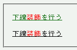
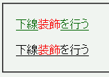

2003-05-09修正。症状を変更。
a要素（リンク文字列）にデフォルトで設定されている下線を、子孫要素で text-decoration: none; を指定すると親要素のtext-decorationプロパティで設定した装飾を解除できる。
<p><a href="../winie.html">下線 <em style="text-decoration:none;">装飾</em>を行う</a></p> <p style="text-decoration:underline;">下線 <em style="text-decoration:none;">装飾</em>を行う</p>
下線装飾を行う
前者はa要素にデフォルトで設定されている下線を、後者はp要素に指定した下線を、それぞれem要素で解除しようとしています。
Moz1.0での表示
WinIE6.0での表示
CSSでは、text-decorationプロパティで指定された内容は継承されないが、子孫要素のブロックはすべて同じ装飾を施されるべきと規定されています。
WinIE5.5/6.0ではa要素にデフォルトで設定されている下線をこの方法で解除することができます。WinIE5.0では加えてins要素とu要素の下線、del要素・s要素・strike要素の打ち消し線も解除できます。
WinIE6.0では、標準・互換モードともに、リンク文字列にデフォルトで指定された下線装飾を解除できます。